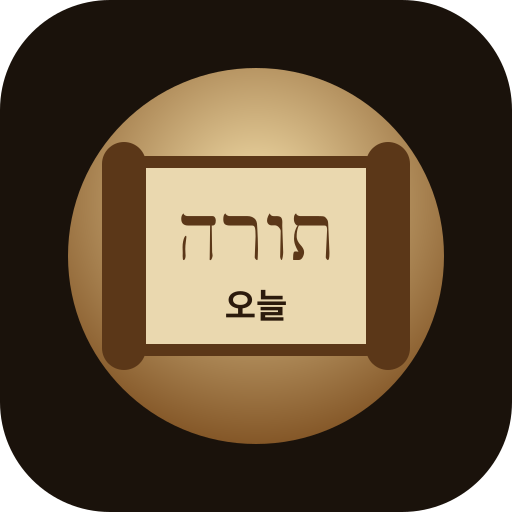

개인 테스트용 잠금 화면입니다.
오늘의 한 페이지
날짜를 누르면 그날 공부 카드가 열립니다.
잘못 번역된 단어를 원하는 표현으로 즉시 바꿉니다. 영구 저장은 data/glossary.json에 추가하세요.
data/glossary.json
숨은 경로 추천: /private/today-torah/
/private/today-torah/
공개 메뉴에 링크를 걸지 않고, 주소를 아는 사람만 들어오게 하는 방식입니다. 실제 보안은 서버 로그인으로 강화해야 합니다.